Ordination Lab
For this lab we will work on multivariate ordination analyses of biological communities. We will be running a type of unconstrained analysis known as Non-metric multidimensional scaling (NMDS) and interpreting then visualizing the results.
The dataset we are using is a community data matrix provided by Jade Keehn of the Feldman lab. Plant species richness was collected along 54 100m transects in sand dune habitat. One environnmental variable (disturbance, as measured by presence of 4x4 vehicle tracks) was gathered at each site.
library(vegan)## Warning: package 'vegan' was built under R version 3.3.2## Loading required package: permute## Warning: package 'permute' was built under R version 3.3.2## Loading required package: lattice## This is vegan 2.4-1library(MASS)
library(vegan3d)## Warning: package 'vegan3d' was built under R version 3.3.2data<-read.table("TestDataset2.csv", sep=",", header=TRUE, blank.lines.skip = TRUE)
lizzy<-read.table("TestHypotheses.csv", sep=",", header=TRUE, blank.lines.skip = TRUE) Run Ordination
Running an ordination is made simple with the VEGAN package, but picking the proper parameters and understanding the results takes some work.
ord<-metaMDS(data,binomial=TRUE,distance="bray") ## Run 0 stress 0.2159305
## Run 1 stress 0.2348774
## Run 2 stress 0.2252039
## Run 3 stress 0.2159179
## ... New best solution
## ... Procrustes: rmse 0.002162349 max resid 0.01129179
## Run 4 stress 0.215906
## ... New best solution
## ... Procrustes: rmse 0.008273184 max resid 0.04477757
## Run 5 stress 0.2176669
## Run 6 stress 0.2159048
## ... New best solution
## ... Procrustes: rmse 0.0004257322 max resid 0.001378337
## ... Similar to previous best
## Run 7 stress 0.2331629
## Run 8 stress 0.2475636
## Run 9 stress 0.2173757
## Run 10 stress 0.2475881
## Run 11 stress 0.2159445
## ... Procrustes: rmse 0.01097516 max resid 0.04890915
## Run 12 stress 0.2405515
## Run 13 stress 0.240396
## Run 14 stress 0.2193224
## Run 15 stress 0.2448298
## Run 16 stress 0.2439576
## Run 17 stress 0.2281995
## Run 18 stress 0.2324564
## Run 19 stress 0.2379619
## Run 20 stress 0.2299088
## *** Solution reachedord##
## Call:
## metaMDS(comm = data, distance = "bray", binomial = TRUE)
##
## global Multidimensional Scaling using monoMDS
##
## Data: data
## Distance: bray
##
## Dimensions: 2
## Stress: 0.2159048
## Stress type 1, weak ties
## Two convergent solutions found after 20 tries
## Scaling: centring, PC rotation, halfchange scaling
## Species: expanded scores based on 'data'Due to the nonlinear relationship of NMDS ordinations the iteration often has difficulty in finding the global optimum. Therefore, it is recommended to use several random starts and to select those solutions with the smallest stresses. This sounds like a lot of work, but we are in luck as VEGAN has a function which does this for us: metaMDS. metaMDS allows us to easily run multiple iterations (default is 20). If you desire running more iterations simply add ‘try=# of iterations’ to the code.
Note that the defaults of k (# of dimensions) is 2 and the dissimilarity index is Bray-Curtis.
Plotting the Ordination
The metaMDS function rotates the solution so that the largest variance of site scores will be on the first axis. Also, the species scores are expanded (from weighted averages of site scores) so that they have equal variances with site scores.
Code is provided for plotting the species and site ordinations together and seperately.
plot(ord,main="Ordination",type="t") 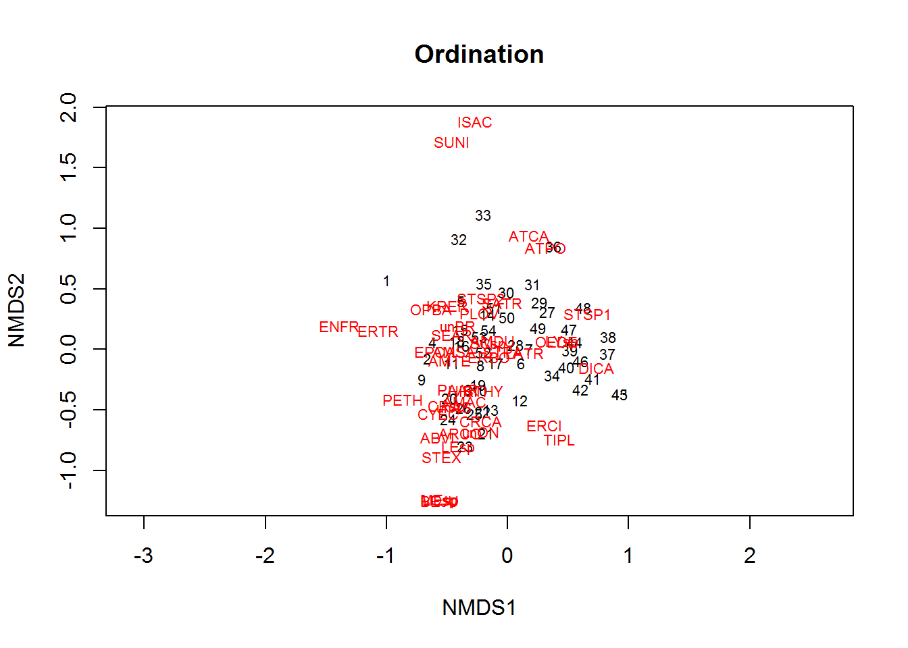
plot(ord,main="Species Ordination",type="t",display="species")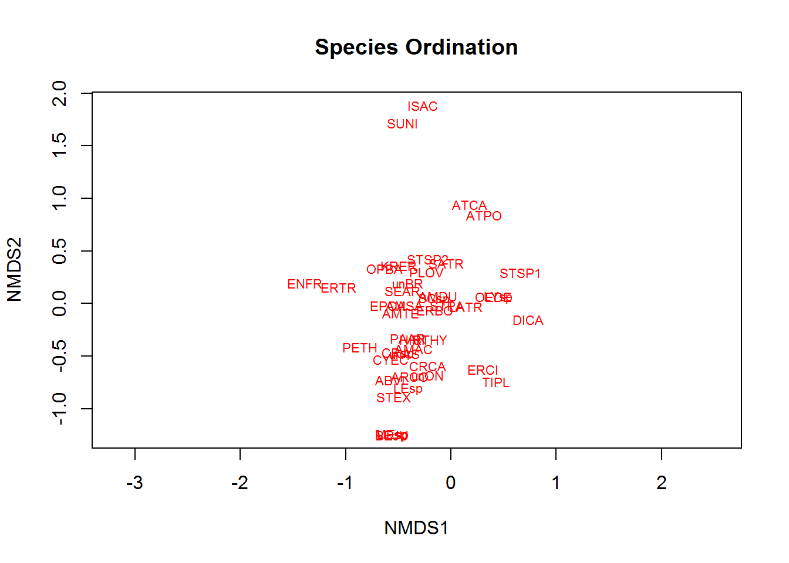
plot(ord,main="Site Ordination",type="t",display="sites")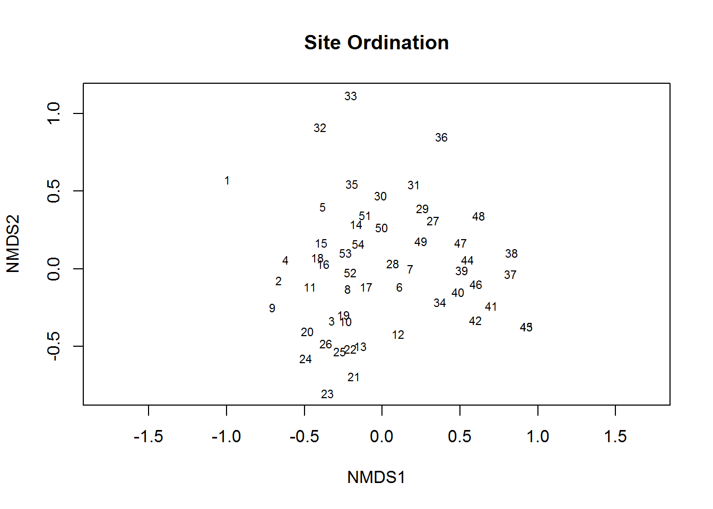
Species ordination: each point corresponds to a species’ point of central tendency. Distances between species are their degree of similarity in terms of their distribution within the plots. The axes are gradients of plot-occurrence similarity. The species close to each other are likely to co-occur in the landscape, whereas species that are far apart probably do not occur in the same plots.
Site ordination: each point represents a vegetation plot (1-54 sites). The greater the distance between the points, the greater the difference in floristic composition of the plots. The axes are gradients of floristic similarity and have no environmental meaning, but can be correlated with environmental data from the study plots.
Community Dissimilarities
Function ‘vegdist’ gives the ecological dissimilarity between each pair of sites. The example below allows us to see the dissimilarity index which is automatically calculated within vegan package ordinations. The higher the value the more dissimilar the sites are.
d<-vegdist(data,binary="TRUE",method="bray")
d## 1 2 3 4 5 6
## 2 0.45454545
## 3 0.69230769 0.37500000
## 4 0.73333333 0.44444444 0.50000000
## 5 0.66666667 0.60000000 0.64705882 0.36842105
## 6 0.66666667 0.60000000 0.52941176 0.57894737 0.50000000
## 7 0.83333333 0.73333333 0.76470588 0.68421053 0.50000000 0.37500000
## 8 0.69230769 0.50000000 0.33333333 0.50000000 0.52941176 0.52941176
## 9 0.38461538 0.37500000 0.33333333 0.60000000 0.64705882 0.64705882
## 10 0.75000000 0.47368421 0.23809524 0.47826087 0.60000000 0.50000000
## 11 0.63636364 0.71428571 0.62500000 0.44444444 0.46666667 0.60000000
## 12 0.85714286 0.64705882 0.57894737 0.61904762 0.66666667 0.33333333
## 13 0.88235294 0.60000000 0.54545455 0.50000000 0.61904762 0.52380952
## 14 0.77777778 0.66666667 0.57142857 0.50000000 0.38461538 0.53846154
## 15 0.77777778 0.52380952 0.47826087 0.20000000 0.27272727 0.54545455
## 16 0.85714286 0.64705882 0.57894737 0.42857143 0.33333333 0.55555556
## 17 0.64705882 0.40000000 0.36363636 0.41666667 0.52380952 0.42857143
## 18 0.76470588 0.50000000 0.45454545 0.50000000 0.33333333 0.61904762
## 19 0.88235294 0.60000000 0.36363636 0.50000000 0.52380952 0.52380952
## 20 0.78947368 0.45454545 0.50000000 0.46153846 0.56521739 0.65217391
## 21 0.78947368 0.63636364 0.50000000 0.69230769 0.82608696 0.56521739
## 22 0.76470588 0.60000000 0.45454545 0.58333333 0.71428571 0.52380952
## 23 0.88888889 0.61904762 0.47826087 0.68000000 0.81818182 0.63636364
## 24 0.80000000 0.47826087 0.52000000 0.55555556 0.66666667 0.66666667
## 25 0.78947368 0.54545455 0.41666667 0.53846154 0.56521739 0.56521739
## 26 0.88888889 0.52380952 0.47826087 0.52000000 0.63636364 0.81818182
## 27 0.83333333 0.73333333 0.64705882 0.78947368 0.50000000 0.50000000
## 28 0.78947368 0.72727273 0.66666667 0.61538462 0.65217391 0.56521739
## 29 0.83333333 0.60000000 0.76470588 0.47368421 0.50000000 0.62500000
## 30 0.69230769 0.62500000 0.44444444 0.60000000 0.52941176 0.52941176
## 31 0.80000000 0.69230769 0.60000000 0.76470588 0.57142857 0.57142857
## 32 0.55555556 0.66666667 0.71428571 0.75000000 0.53846154 0.53846154
## 33 0.80000000 0.84615385 0.86666667 0.88235294 0.71428571 0.71428571
## 34 1.00000000 0.84615385 0.60000000 0.76470588 0.71428571 0.42857143
## 35 0.77777778 0.50000000 0.71428571 0.50000000 0.38461538 0.53846154
## 36 0.66666667 0.55555556 0.63636364 0.69230769 0.60000000 0.60000000
## 37 1.00000000 0.80000000 0.66666667 0.85714286 0.81818182 0.63636364
## 38 0.71428571 0.80000000 0.66666667 0.85714286 0.81818182 0.63636364
## 39 0.75000000 0.63636364 0.53846154 0.73333333 0.66666667 0.50000000
## 40 0.77777778 0.66666667 0.57142857 0.75000000 0.69230769 0.53846154
## 41 1.00000000 0.63636364 0.53846154 0.73333333 0.83333333 0.66666667
## 42 1.00000000 0.50000000 0.57142857 0.62500000 0.84615385 0.69230769
## 43 1.00000000 0.80000000 0.83333333 0.85714286 0.81818182 0.63636364
## 44 1.00000000 0.66666667 0.71428571 0.62500000 0.69230769 0.69230769
## 45 1.00000000 0.80000000 0.83333333 0.85714286 0.81818182 0.63636364
## 46 0.80000000 0.69230769 0.60000000 0.76470588 0.71428571 0.57142857
## 47 0.80000000 0.69230769 0.60000000 0.64705882 0.57142857 0.57142857
## 48 1.00000000 0.80000000 0.66666667 0.71428571 0.63636364 0.81818182
## 49 0.77777778 0.66666667 0.71428571 0.62500000 0.38461538 0.38461538
## 50 0.50000000 0.60000000 0.64705882 0.57894737 0.37500000 0.37500000
## 51 0.71428571 0.64705882 0.68421053 0.61904762 0.55555556 0.66666667
## 52 0.73333333 0.66666667 0.60000000 0.72727273 0.57894737 0.57894737
## 53 0.75000000 0.47368421 0.52380952 0.56521739 0.40000000 0.50000000
## 54 0.71428571 0.64705882 0.57894737 0.61904762 0.44444444 0.44444444
## 7 8 9 10 11 12
## 2
## 3
## 4
## 5
## 6
## 7
## 8 0.52941176
## 9 0.76470588 0.44444444
## 10 0.50000000 0.23809524 0.42857143
## 11 0.46666667 0.37500000 0.50000000 0.47368421
## 12 0.33333333 0.57894737 0.68421053 0.45454545 0.52941176
## 13 0.52380952 0.45454545 0.54545455 0.36000000 0.40000000 0.39130435
## 14 0.38461538 0.42857143 0.57142857 0.52941176 0.33333333 0.46666667
## 15 0.63636364 0.47826087 0.65217391 0.46153846 0.52380952 0.58333333
## 16 0.44444444 0.47368421 0.68421053 0.45454545 0.41176471 0.50000000
## 17 0.42857143 0.27272727 0.45454545 0.28000000 0.40000000 0.39130435
## 18 0.61904762 0.45454545 0.63636364 0.44000000 0.70000000 0.73913043
## 19 0.52380952 0.36363636 0.54545455 0.20000000 0.40000000 0.47826087
## 20 0.56521739 0.41666667 0.50000000 0.25925926 0.54545455 0.52000000
## 21 0.56521739 0.58333333 0.50000000 0.33333333 0.54545455 0.44000000
## 22 0.52380952 0.45454545 0.45454545 0.28000000 0.40000000 0.47826087
## 23 0.63636364 0.56521739 0.56521739 0.30769231 0.61904762 0.50000000
## 24 0.66666667 0.52000000 0.52000000 0.35714286 0.65217391 0.53846154
## 25 0.65217391 0.50000000 0.50000000 0.33333333 0.63636364 0.60000000
## 26 0.72727273 0.47826087 0.56521739 0.38461538 0.61904762 0.66666667
## 27 0.50000000 0.64705882 0.76470588 0.70000000 0.73333333 0.55555556
## 28 0.39130435 0.41666667 0.66666667 0.48148148 0.45454545 0.36000000
## 29 0.50000000 0.64705882 0.76470588 0.70000000 0.60000000 0.55555556
## 30 0.64705882 0.44444444 0.55555556 0.52380952 0.62500000 0.57894737
## 31 0.57142857 0.60000000 0.73333333 0.66666667 0.69230769 0.62500000
## 32 0.69230769 0.71428571 0.71428571 0.76470588 0.83333333 0.73333333
## 33 0.71428571 0.86666667 0.86666667 0.88888889 0.84615385 0.75000000
## 34 0.42857143 0.46666667 0.73333333 0.55555556 0.53846154 0.37500000
## 35 0.53846154 0.57142857 0.71428571 0.64705882 0.66666667 0.60000000
## 36 0.80000000 0.63636364 0.63636364 0.71428571 0.77777778 0.83333333
## 37 0.63636364 0.66666667 0.83333333 0.73333333 0.80000000 0.69230769
## 38 0.63636364 0.66666667 0.83333333 0.73333333 0.80000000 0.69230769
## 39 0.50000000 0.53846154 0.69230769 0.62500000 0.63636364 0.57142857
## 40 0.53846154 0.57142857 0.57142857 0.52941176 0.66666667 0.60000000
## 41 0.66666667 0.69230769 0.84615385 0.62500000 0.81818182 0.71428571
## 42 0.69230769 0.71428571 0.85714286 0.64705882 0.83333333 0.60000000
## 43 0.63636364 0.83333333 0.83333333 0.86666667 0.80000000 0.69230769
## 44 0.53846154 0.57142857 0.85714286 0.64705882 0.66666667 0.60000000
## 45 0.63636364 0.83333333 0.83333333 0.86666667 0.80000000 0.69230769
## 46 0.57142857 0.60000000 0.73333333 0.66666667 0.69230769 0.62500000
## 47 0.57142857 0.46666667 0.73333333 0.55555556 0.69230769 0.75000000
## 48 0.63636364 0.50000000 0.83333333 0.60000000 0.60000000 0.84615385
## 49 0.23076923 0.57142857 0.71428571 0.64705882 0.50000000 0.46666667
## 50 0.37500000 0.52941176 0.52941176 0.60000000 0.46666667 0.55555556
## 51 0.55555556 0.57894737 0.68421053 0.63636364 0.52941176 0.60000000
## 52 0.47368421 0.40000000 0.60000000 0.47826087 0.44444444 0.61904762
## 53 0.50000000 0.33333333 0.61904762 0.41666667 0.57894737 0.54545455
## 54 0.44444444 0.36842105 0.68421053 0.45454545 0.52941176 0.60000000
## 13 14 15 16 17 18
## 2
## 3
## 4
## 5
## 6
## 7
## 8
## 9
## 10
## 11
## 12
## 13
## 14 0.55555556
## 15 0.55555556 0.47368421
## 16 0.56521739 0.33333333 0.33333333
## 17 0.38461538 0.44444444 0.33333333 0.39130435
## 18 0.53846154 0.55555556 0.33333333 0.39130435 0.38461538
## 19 0.30769231 0.44444444 0.40740741 0.39130435 0.30769231 0.38461538
## 20 0.28571429 0.60000000 0.44827586 0.44000000 0.35714286 0.35714286
## 21 0.28571429 0.70000000 0.72413793 0.60000000 0.42857143 0.57142857
## 22 0.23076923 0.55555556 0.62962963 0.47826087 0.30769231 0.53846154
## 23 0.48148148 0.68421053 0.71428571 0.58333333 0.55555556 0.70370370
## 24 0.37931034 0.71428571 0.53333333 0.53846154 0.44827586 0.37931034
## 25 0.35714286 0.60000000 0.51724138 0.52000000 0.42857143 0.35714286
## 26 0.40740741 0.57894737 0.42857143 0.50000000 0.40740741 0.33333333
## 27 0.71428571 0.53846154 0.54545455 0.55555556 0.52380952 0.52380952
## 28 0.50000000 0.50000000 0.51724138 0.52000000 0.28571429 0.64285714
## 29 0.52380952 0.53846154 0.54545455 0.55555556 0.52380952 0.61904762
## 30 0.72727273 0.42857143 0.47826087 0.57894737 0.45454545 0.54545455
## 31 0.78947368 0.45454545 0.60000000 0.62500000 0.57894737 0.57894737
## 32 0.88888889 0.60000000 0.68421053 0.73333333 0.66666667 0.66666667
## 33 0.89473684 0.63636364 0.80000000 0.75000000 0.78947368 0.78947368
## 34 0.57894737 0.45454545 0.60000000 0.50000000 0.36842105 0.68421053
## 35 0.66666667 0.40000000 0.47368421 0.60000000 0.44444444 0.55555556
## 36 0.86666667 0.71428571 0.75000000 0.83333333 0.73333333 0.73333333
## 37 0.75000000 0.75000000 0.76470588 0.84615385 0.62500000 0.75000000
## 38 0.75000000 0.75000000 0.76470588 0.84615385 0.62500000 0.75000000
## 39 0.64705882 0.55555556 0.66666667 0.71428571 0.52941176 0.64705882
## 40 0.55555556 0.60000000 0.68421053 0.73333333 0.55555556 0.66666667
## 41 0.76470588 0.77777778 0.66666667 0.71428571 0.52941176 0.64705882
## 42 0.66666667 0.80000000 0.57894737 0.73333333 0.44444444 0.66666667
## 43 0.75000000 0.75000000 0.88235294 0.84615385 0.75000000 0.87500000
## 44 0.55555556 0.60000000 0.57894737 0.73333333 0.44444444 0.66666667
## 45 0.75000000 0.75000000 0.88235294 0.84615385 0.75000000 0.87500000
## 46 0.68421053 0.63636364 0.70000000 0.75000000 0.57894737 0.68421053
## 47 0.68421053 0.63636364 0.60000000 0.75000000 0.47368421 0.57894737
## 48 0.75000000 0.50000000 0.64705882 0.69230769 0.62500000 0.62500000
## 49 0.55555556 0.20000000 0.57894737 0.46666667 0.44444444 0.55555556
## 50 0.61904762 0.38461538 0.54545455 0.44444444 0.33333333 0.52380952
## 51 0.56521739 0.46666667 0.50000000 0.50000000 0.39130435 0.47826087
## 52 0.41666667 0.50000000 0.60000000 0.42857143 0.33333333 0.33333333
## 53 0.52000000 0.52941176 0.38461538 0.36363636 0.28000000 0.36000000
## 54 0.47826087 0.46666667 0.50000000 0.40000000 0.39130435 0.30434783
## 19 20 21 22 23 24
## 2
## 3
## 4
## 5
## 6
## 7
## 8
## 9
## 10
## 11
## 12
## 13
## 14
## 15
## 16
## 17
## 18
## 19
## 20 0.42857143
## 21 0.42857143 0.26666667
## 22 0.30769231 0.28571429 0.14285714
## 23 0.40740741 0.37931034 0.24137931 0.33333333
## 24 0.44827586 0.09677419 0.22580645 0.37931034 0.33333333
## 25 0.35714286 0.33333333 0.33333333 0.35714286 0.44827586 0.29032258
## 26 0.33333333 0.24137931 0.44827586 0.33333333 0.50000000 0.26666667
## 27 0.61904762 0.73913043 0.73913043 0.71428571 0.81818182 0.75000000
## 28 0.50000000 0.53333333 0.53333333 0.50000000 0.65517241 0.61290323
## 29 0.71428571 0.65217391 0.73913043 0.61904762 0.81818182 0.75000000
## 30 0.54545455 0.66666667 0.75000000 0.72727273 0.73913043 0.68000000
## 31 0.57894737 0.80952381 0.80952381 0.78947368 0.80000000 0.81818182
## 32 0.77777778 0.80000000 0.90000000 0.88888889 0.89473684 0.80952381
## 33 0.78947368 0.90476190 0.90476190 0.89473684 0.90000000 0.90909091
## 34 0.47368421 0.71428571 0.61904762 0.57894737 0.70000000 0.72727273
## 35 0.66666667 0.60000000 0.90000000 0.77777778 0.89473684 0.71428571
## 36 0.86666667 0.76470588 0.88235294 0.86666667 0.87500000 0.77777778
## 37 0.75000000 0.88888889 0.77777778 0.75000000 0.88235294 0.89473684
## 38 0.75000000 0.88888889 0.77777778 0.75000000 0.88235294 0.89473684
## 39 0.64705882 0.78947368 0.68421053 0.64705882 0.77777778 0.80000000
## 40 0.55555556 0.70000000 0.60000000 0.55555556 0.68421053 0.71428571
## 41 0.64705882 0.78947368 0.68421053 0.64705882 0.77777778 0.80000000
## 42 0.66666667 0.70000000 0.70000000 0.66666667 0.78947368 0.71428571
## 43 0.87500000 0.88888889 0.66666667 0.75000000 0.76470588 0.78947368
## 44 0.66666667 0.70000000 0.80000000 0.66666667 0.89473684 0.80952381
## 45 0.87500000 0.88888889 0.66666667 0.75000000 0.76470588 0.78947368
## 46 0.68421053 0.80952381 0.61904762 0.68421053 0.70000000 0.72727273
## 47 0.68421053 0.71428571 0.80952381 0.68421053 0.90000000 0.81818182
## 48 0.62500000 0.77777778 0.88888889 0.75000000 0.88235294 0.89473684
## 49 0.55555556 0.70000000 0.70000000 0.55555556 0.78947368 0.80952381
## 50 0.61904762 0.65217391 0.65217391 0.52380952 0.81818182 0.75000000
## 51 0.56521739 0.60000000 0.68000000 0.65217391 0.83333333 0.69230769
## 52 0.41666667 0.46153846 0.46153846 0.41666667 0.68000000 0.55555556
## 53 0.44000000 0.40740741 0.70370370 0.60000000 0.69230769 0.50000000
## 54 0.47826087 0.44000000 0.60000000 0.56521739 0.75000000 0.53846154
## 25 26 27 28 29 30
## 2
## 3
## 4
## 5
## 6
## 7
## 8
## 9
## 10
## 11
## 12
## 13
## 14
## 15
## 16
## 17
## 18
## 19
## 20
## 21
## 22
## 23
## 24
## 25
## 26 0.37931034
## 27 0.65217391 0.63636364
## 28 0.66666667 0.58620690 0.39130435
## 29 0.65217391 0.63636364 0.37500000 0.39130435
## 30 0.66666667 0.65217391 0.29411765 0.33333333 0.52941176
## 31 0.80952381 0.70000000 0.14285714 0.42857143 0.42857143 0.20000000
## 32 0.80000000 0.89473684 0.53846154 0.70000000 0.69230769 0.42857143
## 33 0.90476190 0.90000000 0.42857143 0.61904762 0.57142857 0.46666667
## 34 0.71428571 0.70000000 0.42857143 0.42857143 0.71428571 0.46666667
## 35 0.70000000 0.68421053 0.69230769 0.60000000 0.53846154 0.57142857
## 36 0.76470588 0.87500000 0.80000000 0.88235294 0.80000000 0.63636364
## 37 0.77777778 0.76470588 0.45454545 0.66666667 0.63636364 0.66666667
## 38 0.77777778 0.76470588 0.45454545 0.66666667 0.63636364 0.66666667
## 39 0.68421053 0.66666667 0.33333333 0.57894737 0.50000000 0.53846154
## 40 0.60000000 0.57894737 0.38461538 0.60000000 0.53846154 0.57142857
## 41 0.68421053 0.66666667 0.50000000 0.68421053 0.66666667 0.69230769
## 42 0.70000000 0.57894737 0.53846154 0.60000000 0.53846154 0.71428571
## 43 0.66666667 0.88235294 0.63636364 0.77777778 0.63636364 0.83333333
## 44 0.70000000 0.57894737 0.53846154 0.50000000 0.38461538 0.71428571
## 45 0.66666667 0.88235294 0.63636364 0.77777778 0.63636364 0.83333333
## 46 0.61904762 0.70000000 0.42857143 0.52380952 0.57142857 0.46666667
## 47 0.61904762 0.70000000 0.57142857 0.52380952 0.57142857 0.46666667
## 48 0.77777778 0.64705882 0.63636364 0.66666667 0.63636364 0.66666667
## 49 0.60000000 0.68421053 0.38461538 0.50000000 0.38461538 0.57142857
## 50 0.56521739 0.72727273 0.50000000 0.47826087 0.50000000 0.52941176
## 51 0.68000000 0.58333333 0.55555556 0.44000000 0.55555556 0.57894737
## 52 0.61538462 0.52000000 0.57894737 0.46153846 0.68421053 0.60000000
## 53 0.55555556 0.46153846 0.50000000 0.48148148 0.60000000 0.52380952
## 54 0.60000000 0.58333333 0.55555556 0.52000000 0.66666667 0.47368421
## 31 32 33 34 35 36
## 2
## 3
## 4
## 5
## 6
## 7
## 8
## 9
## 10
## 11
## 12
## 13
## 14
## 15
## 16
## 17
## 18
## 19
## 20
## 21
## 22
## 23
## 24
## 25
## 26
## 27
## 28
## 29
## 30
## 31
## 32 0.45454545
## 33 0.33333333 0.27272727
## 34 0.50000000 0.81818182 0.83333333
## 35 0.63636364 0.60000000 0.81818182 0.63636364
## 36 0.75000000 0.71428571 1.00000000 0.75000000 0.42857143
## 37 0.55555556 1.00000000 1.00000000 0.33333333 0.75000000 0.60000000
## 38 0.55555556 0.75000000 0.77777778 0.55555556 1.00000000 1.00000000
## 39 0.40000000 0.77777778 0.80000000 0.40000000 0.77777778 0.66666667
## 40 0.45454545 0.80000000 0.81818182 0.45454545 0.80000000 0.71428571
## 41 0.60000000 1.00000000 1.00000000 0.40000000 0.77777778 0.66666667
## 42 0.63636364 1.00000000 1.00000000 0.45454545 0.60000000 0.71428571
## 43 0.77777778 1.00000000 1.00000000 0.55555556 0.75000000 0.60000000
## 44 0.63636364 1.00000000 1.00000000 0.45454545 0.40000000 0.71428571
## 45 0.77777778 1.00000000 1.00000000 0.55555556 0.75000000 0.60000000
## 46 0.50000000 0.81818182 0.83333333 0.50000000 0.81818182 0.75000000
## 47 0.66666667 0.81818182 1.00000000 0.50000000 0.45454545 0.50000000
## 48 0.55555556 1.00000000 1.00000000 0.55555556 0.50000000 0.60000000
## 49 0.45454545 0.60000000 0.63636364 0.45454545 0.40000000 0.71428571
## 50 0.57142857 0.53846154 0.71428571 0.57142857 0.38461538 0.60000000
## 51 0.50000000 0.73333333 0.75000000 0.62500000 0.46666667 0.83333333
## 52 0.52941176 0.75000000 0.76470588 0.52941176 0.62500000 0.84615385
## 53 0.55555556 0.64705882 0.77777778 0.55555556 0.41176471 0.71428571
## 54 0.50000000 0.60000000 0.75000000 0.50000000 0.46666667 0.66666667
## 37 38 39 40 41 42
## 2
## 3
## 4
## 5
## 6
## 7
## 8
## 9
## 10
## 11
## 12
## 13
## 14
## 15
## 16
## 17
## 18
## 19
## 20
## 21
## 22
## 23
## 24
## 25
## 26
## 27
## 28
## 29
## 30
## 31
## 32
## 33
## 34
## 35
## 36
## 37
## 38 0.33333333
## 39 0.14285714 0.14285714
## 40 0.25000000 0.25000000 0.11111111
## 41 0.14285714 0.42857143 0.25000000 0.33333333
## 42 0.25000000 0.50000000 0.33333333 0.40000000 0.11111111
## 43 0.33333333 0.66666667 0.42857143 0.50000000 0.42857143 0.50000000
## 44 0.25000000 0.50000000 0.33333333 0.40000000 0.33333333 0.20000000
## 45 0.33333333 0.66666667 0.42857143 0.50000000 0.42857143 0.50000000
## 46 0.33333333 0.33333333 0.20000000 0.27272727 0.40000000 0.45454545
## 47 0.33333333 0.55555556 0.40000000 0.45454545 0.40000000 0.45454545
## 48 0.33333333 0.66666667 0.42857143 0.50000000 0.42857143 0.50000000
## 49 0.50000000 0.50000000 0.33333333 0.40000000 0.55555556 0.60000000
## 50 0.63636364 0.63636364 0.50000000 0.53846154 0.66666667 0.69230769
## 51 0.69230769 0.69230769 0.57142857 0.60000000 0.71428571 0.60000000
## 52 0.71428571 0.71428571 0.60000000 0.62500000 0.73333333 0.75000000
## 53 0.73333333 0.73333333 0.62500000 0.64705882 0.75000000 0.64705882
## 54 0.69230769 0.69230769 0.57142857 0.60000000 0.71428571 0.73333333
## 43 44 45 46 47 48
## 2
## 3
## 4
## 5
## 6
## 7
## 8
## 9
## 10
## 11
## 12
## 13
## 14
## 15
## 16
## 17
## 18
## 19
## 20
## 21
## 22
## 23
## 24
## 25
## 26
## 27
## 28
## 29
## 30
## 31
## 32
## 33
## 34
## 35
## 36
## 37
## 38
## 39
## 40
## 41
## 42
## 43
## 44 0.50000000
## 45 0.00000000 0.50000000
## 46 0.33333333 0.45454545 0.33333333
## 47 0.55555556 0.27272727 0.55555556 0.33333333
## 48 0.66666667 0.25000000 0.66666667 0.55555556 0.33333333
## 49 0.50000000 0.40000000 0.50000000 0.45454545 0.45454545 0.50000000
## 50 0.63636364 0.53846154 0.63636364 0.57142857 0.42857143 0.63636364
## 51 0.84615385 0.46666667 0.84615385 0.62500000 0.62500000 0.53846154
## 52 0.85714286 0.62500000 0.85714286 0.64705882 0.64705882 0.57142857
## 53 0.86666667 0.52941176 0.86666667 0.66666667 0.55555556 0.60000000
## 54 0.84615385 0.60000000 0.84615385 0.62500000 0.50000000 0.53846154
## 49 50 51 52 53
## 2
## 3
## 4
## 5
## 6
## 7
## 8
## 9
## 10
## 11
## 12
## 13
## 14
## 15
## 16
## 17
## 18
## 19
## 20
## 21
## 22
## 23
## 24
## 25
## 26
## 27
## 28
## 29
## 30
## 31
## 32
## 33
## 34
## 35
## 36
## 37
## 38
## 39
## 40
## 41
## 42
## 43
## 44
## 45
## 46
## 47
## 48
## 49
## 50 0.23076923
## 51 0.46666667 0.33333333
## 52 0.50000000 0.36842105 0.23809524
## 53 0.52941176 0.40000000 0.27272727 0.30434783
## 54 0.46666667 0.33333333 0.30000000 0.14285714 0.27272727NMDS has become a commonly used ordination method by ecologists as it can use ecologically meaningful ways of measuring community dissimilarities, via dissimilarity indices. As a result, NMDS can handle non-linear species responses and effectively find the underlying gradients.
As mentioned above, metaMDS uses the Bray-Curtis dissimilarity index by default. However, there are several indices available in the metaMDS function. For example, the Jaccard index has better metric properties. Function ‘rankindex’ can be used to study which index best seperates communities along environmental gradients. The following example uses the environmental variable of ‘disturbance’ to compare dissimilarity indices.
rankindex(scale(lizzy$Dist),data,c("euc","man","bray","jac","kul"))## euc man bray jac kul
## 0.1394238 0.1394238 0.1166184 0.1166184 0.1494509Two of the recommended indices (Bray,Jaccard) are equal and not a bad choice for calculating environmental gradients.
Choosing Dimensions
The next step in running your ordination is to choose the number of dimensions to portray the data in. Results of your ordination can be displayed in 1,2 or 3D.
One Dimension
ord1<-metaMDS(data,k=1,binomial=TRUE,distance="bray")
plot(ord1,display="sites",main="1-Dimension",type="t")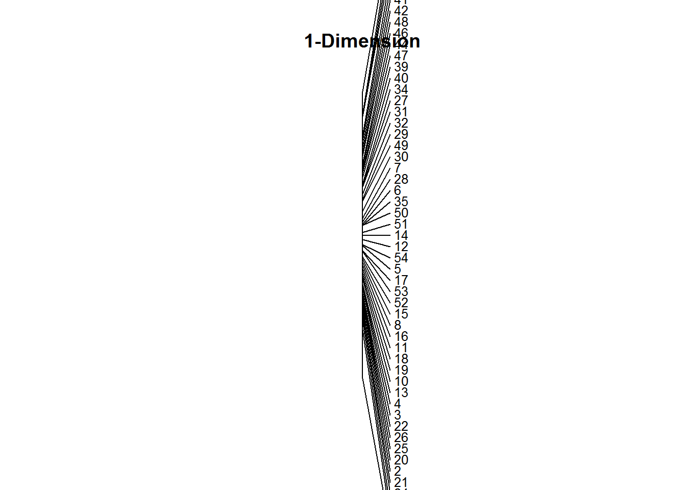
Two Dimensions
ord2<-metaMDS(data,k=2,binomial=TRUE,distance="bray")
plot(ord2,display="sites",main="2-Dimensions",type="t")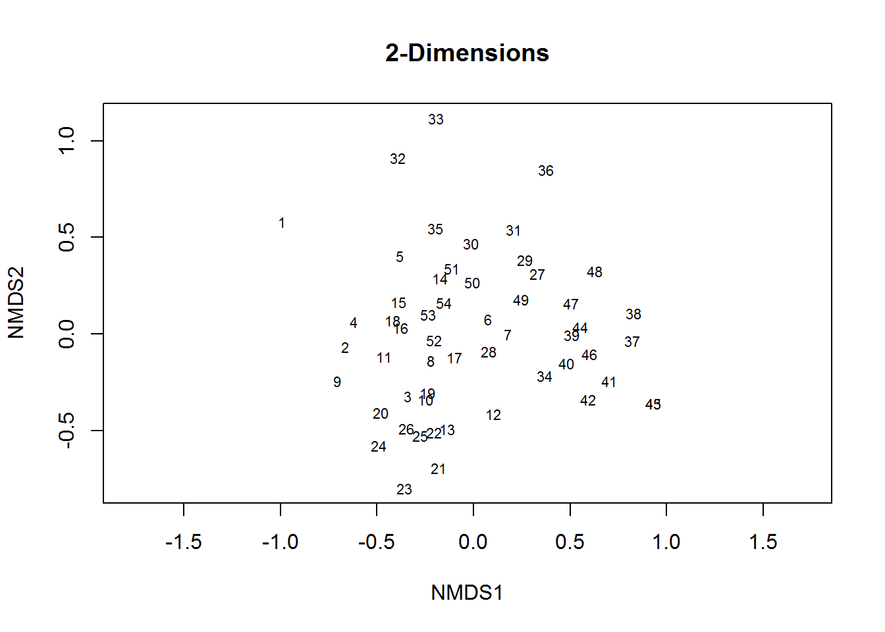
Three Dimensions: uses the vegan3D package
ord3<-metaMDS(data,k=3,binomial=TRUE,distance="bray")
ordiplot3d(ord3,display="sites",main="3-Dimensions",choices=1:3,pch=19,zlab="Dissimilarity")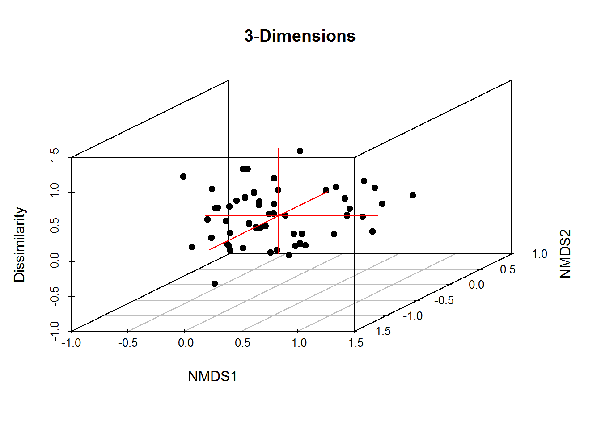
Stress values are a statistic of goodness of fit and help to determine a good number of dimensions to use. NMDS maps observed communtiy dissimilarities nonlinearly onto ordination space and can handle nonlinear species responses. We can visualize the mapping with a Shepard or stressplot and compare the goodness of fit between 2 and 3 dimensions.
stressplot(ord2,main="2D Shepard Stress Plot")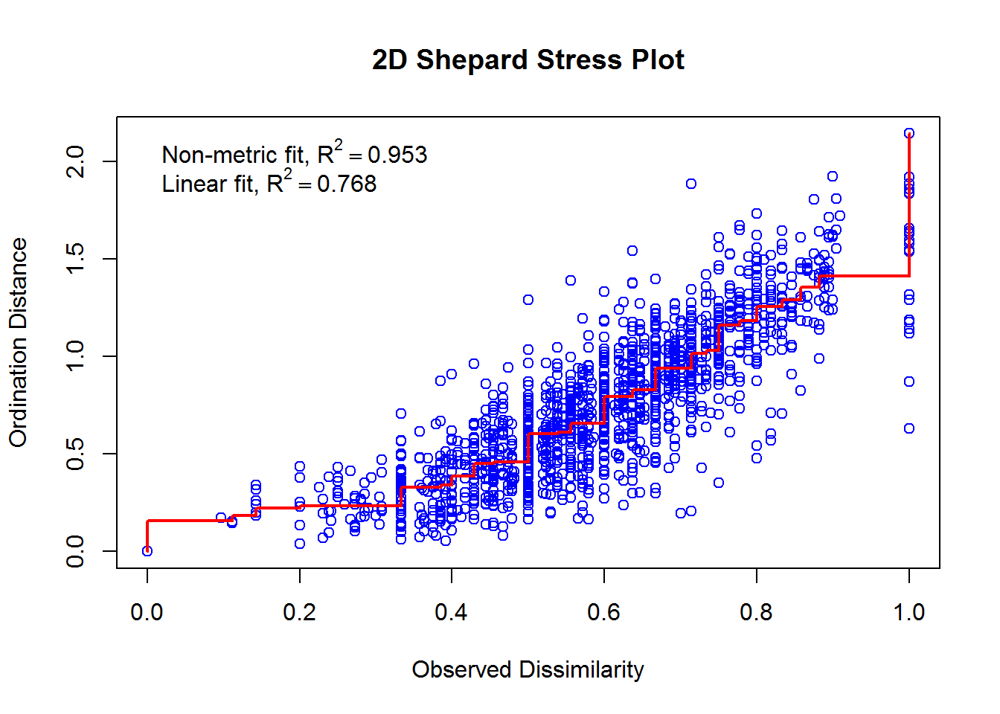
stressplot(ord3,main="3D Shepard Stress Plot")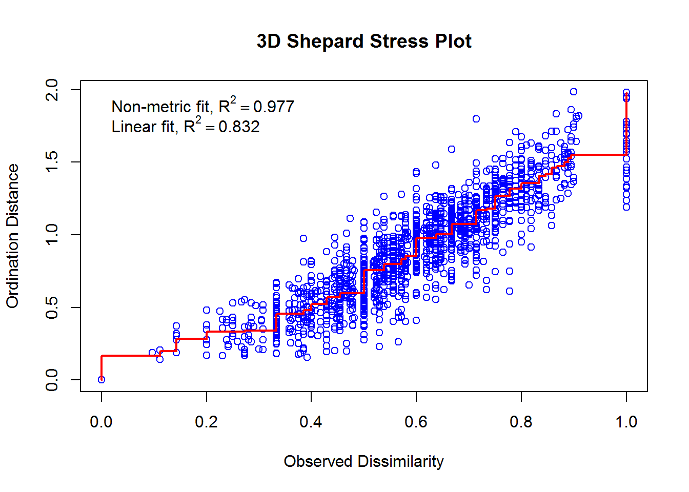
There are several ways of interpreting a stress plot. Visually, the points should adhere cleanly to the curve; large scatter suggests that original dissimilarities aren’t well-preserved in the reduced number of dimensions. Additionally, two statistics of goodness of fit are provided: Non-metric fit is the correlation based on stress and the linear fit is based on distance between the step line and the points.
Goodness of Fit
We can also run and plot a goodness of fit measure on all points. The large values and circles indicate sites with high stress and poor fit.
Goodness of Fit 2D
gof2<-goodness(ord2)
gof2## [1] 0.04193051 0.04253775 0.03761035 0.03412830 0.02126191 0.03585709
## [7] 0.02883332 0.02156545 0.03804157 0.01870926 0.03731392 0.02853290
## [13] 0.01923464 0.02556727 0.02682332 0.02637361 0.01870710 0.03239808
## [19] 0.01904913 0.02058710 0.02132720 0.01603796 0.02412807 0.02395505
## [25] 0.02675138 0.03202308 0.03044241 0.02883358 0.03549973 0.03307586
## [31] 0.02998340 0.02684238 0.03992748 0.02161102 0.03574251 0.05534371
## [37] 0.01561070 0.03395569 0.02104101 0.02543227 0.02602149 0.03144998
## [43] 0.02766050 0.02871553 0.02766048 0.02527861 0.03051312 0.03677663
## [49] 0.02105604 0.02371133 0.03015110 0.02921749 0.01994098 0.02145301plot(ord2,display="sites",main="2D Goodness of Fit",type="t")
points(ord2,cex=2*gof2/mean(gof2))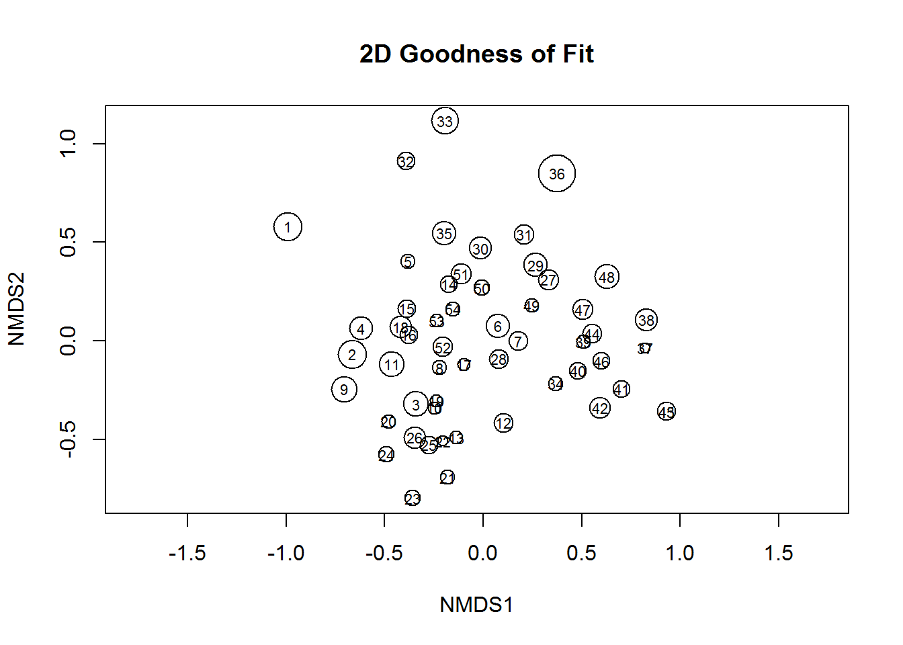
Goodness of Fit 3D
gof3<-goodness(ord3)
gof3## [1] 0.03565384 0.01900594 0.01977347 0.02517244 0.02066903 0.02986861
## [7] 0.01745719 0.01680138 0.02961698 0.01335657 0.02721714 0.01828061
## [13] 0.01521736 0.02181675 0.02065905 0.01742230 0.01283991 0.02221631
## [19] 0.01469132 0.01313443 0.01647452 0.01208652 0.01854859 0.01659691
## [25] 0.01615684 0.02350365 0.01879755 0.02074802 0.02835619 0.02786380
## [31] 0.01961919 0.02509392 0.02325154 0.01815269 0.02677619 0.02134097
## [37] 0.01021552 0.02314076 0.01210105 0.01590633 0.01364604 0.01841145
## [43] 0.01760339 0.02195105 0.01760339 0.01681051 0.01505820 0.02657817
## [49] 0.01671325 0.02217384 0.02574995 0.02279700 0.01778036 0.01917654plot(ord3,display="sites",main="3D Goodness of Fit",type="t")
points(ord3,cex=2*gof3/mean(gof3))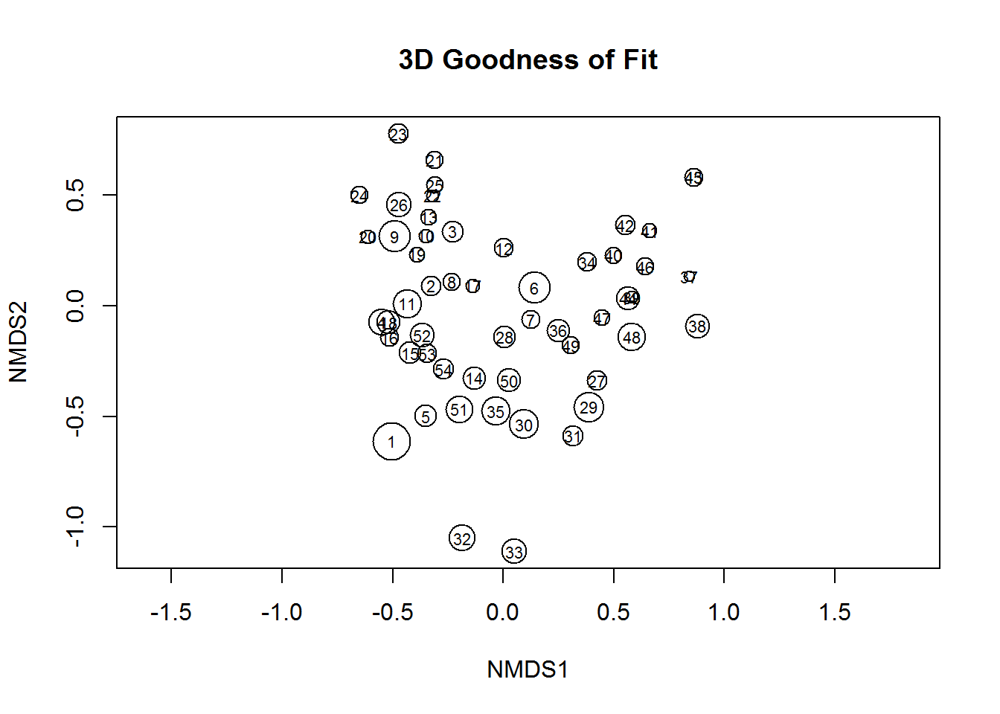
So, with all that how do you know the correct number of dimensions?! The answer is easy, there is no correct number, though some may be worse than others. It is a subjective call and up to you as the ecologist based on your needs and the above analyses. However, ordinations are typically done with 2 and 3 dimensions.
Comparing ordinations with Procrustes rotation
Say we run two ordinations, each with a different dissimilarity index, and then wanted to compare those two ordinations. It may be difficult to do so as the ordinations will most likely be very similar. The best way to compare ordinations is to use Procrustes rotation. A bit of historical context never hurts. Procrustes, in Greek mythology, was a metal smith on Mount Korydallos and was known as “the stretcher.” Now, this dude had an odd habit of attempting to make his victims fit his bed by either stretching or amputating their limbs. The name is apt in the sense that a Procrustes rotation rotates a matrix to maximum similarity with another matrix by using uniform scaling (expansion or contraction) and rotation to minimize the squared differences between the two ordinations.
#Ordination with Bray-Curtis dissimilarity index
ord_bray<-metaMDS(data,k=2,binomial=TRUE,distance="bray")
#Ordination with Jaccard dissimilarity index
ord_jac<-metaMDS(data,k=2,binomial=TRUE,distance="jac")#Function procrustes performs analysis
pro<-procrustes(ord_bray, ord_jac)
pro##
## Call:
## procrustes(X = ord_bray, Y = ord_jac)
##
## Procrustes sum of squares:
## 0.0767plot(pro)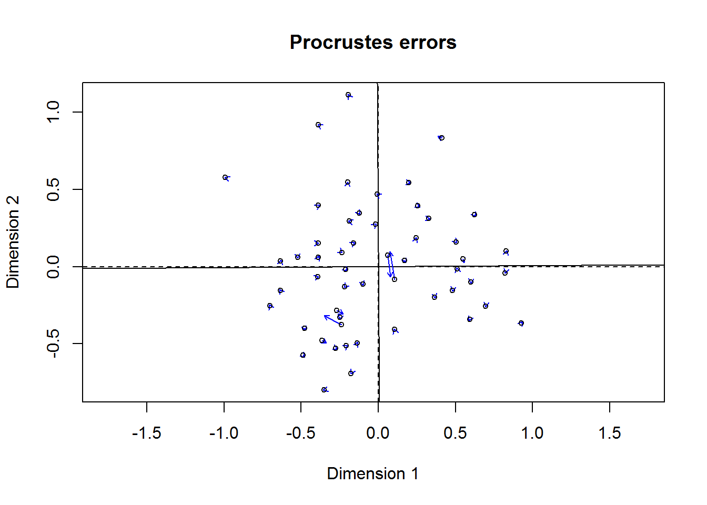
The differences appear small and deal with just a few points.
#Plot of residuals to identify the points with the large differences
plot(pro,kind=2)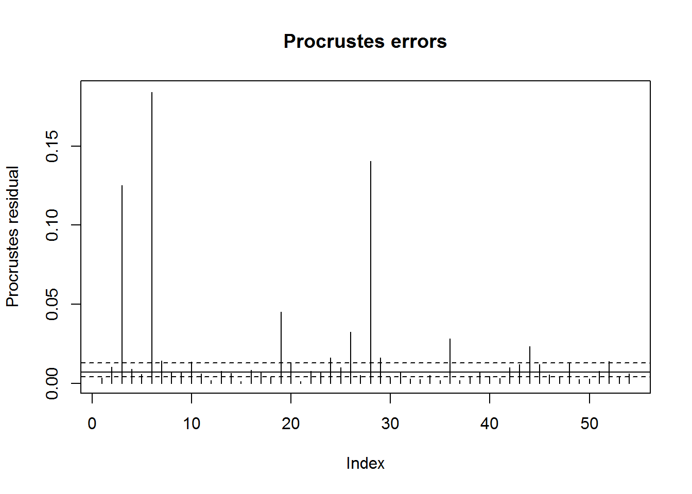
The descriptive statistic, ‘Procrustes sum of squares’, is the sum of the squared arrows in the plot. The rotation is nonsymmetric and the value will change by reversing the order of the ordinations in the function. A more scale-independent and symmetric statistic can be found by adding “symmetric=TRUE” to the function.
#Symmetric rotation
pro_sym<-procrustes(ord_bray, ord_jac,symmetric=TRUE)
pro_sym##
## Call:
## procrustes(X = ord_bray, Y = ord_jac, symmetric = TRUE)
##
## Procrustes sum of squares:
## 0.003883plot(pro_sym)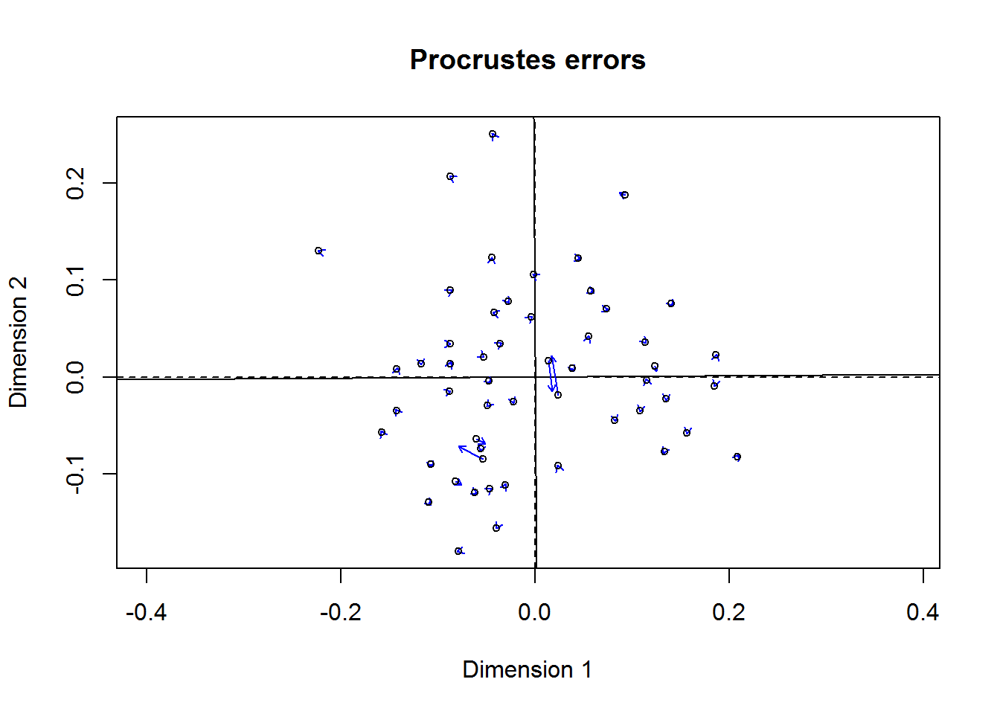
Environmental Interpretation
At this point we have little idea as to what the ordination axes mean ecologically. There are many ways of overlaying environmental information onto ordination diagrams to help explain the ordination. This allows us to correlate the X and Y axes with the ecological knowledge we gathered at our study site.
Vector Fitting
A comonly used interpretation approach is to fit environmental vectors onto an ordination. The fitted vector arrows are interpreted as follows: 1) the arrow points in the direction of the most rapid change in the environmental variable; aka the direction of the gradient. 2) The length of an arrow is proportional to the magnitude of change in that direction and represents the strength of relationship between variable and community; aka the strength of the gradient. We can easily fit an environmental variable to our ordination using function envfit. Here we will fit the environmental variable of ‘disturbance’ to the sites.
ord2<-metaMDS(data,binomial=TRUE) # rerun ordination plot(ord2,display="sites",main="Fitted Vector",type="t") #plot site ordination
vec<-envfit(ord2,lizzy$Dist,permu=999)
vec##
## ***VECTORS
##
## NMDS1 NMDS2 r2 Pr(>r)
## [1,] -0.41502 -0.90981 0.2346 0.002 **
## ---
## Signif. codes: 0 '***' 0.001 '**' 0.01 '*' 0.05 '.' 0.1 ' ' 1
## Permutation: free
## Number of permutations: 999plot(vec) 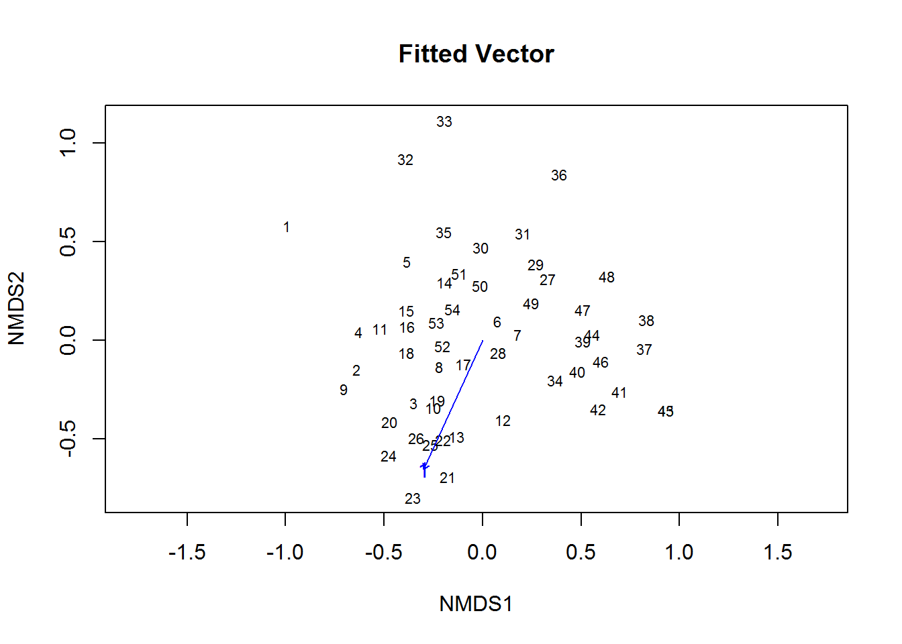
Surface Fitting
Vector fitting implies a linear relationship between your environmental variables and the ordination, which may not always be the case. Instead we can fit a surface of the environmental variable to the ordiantion. This allows us to determine if the response is truly linear. If so, the gradient of fitted surface will be parallel to the arrow and the contours will be perpendicular to the arrow.
ef<-envfit(ord2~lizzy$Dist)
plot(ord2,display="sites",main="Tubular Bro")
plot(ef)
surfin<-ordisurf(ord2,lizzy$Dist,add=TRUE) #Function ordisurf fits the surface to the ordination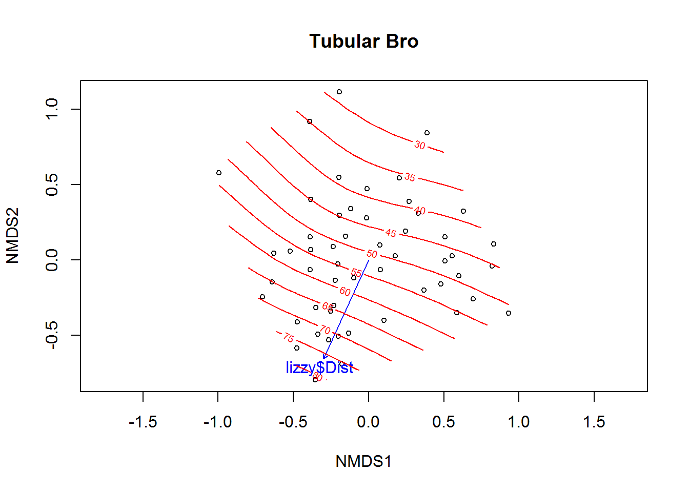
Looks as though disturbance truly has a linear fit to the sites!
Classification
Ordination vs classification: the main purpose of both is to interpret patterns in species composition. Classification is used for grouping ecological communities whereas ordination is used for arranging data along gradients. They are complementary approaches and the vegan package allows us to overlay a classification approach (hierarchical clustering) onto an ordination in order to help visualize our data, the real power of ordinations!
dis<-vegdist(data) #Hierarchic clustering needs dissimilarities as its inputThe function hclust has 3 alternative clustering methods: single linkage (nearest neighbor), complete linkage (furthest neighbor) and average linkage. Running the function produces dendograms which are a visualization of the dissimilarity matrix, based on the presence-absence data.
clus_sin<-hclust(dis,"single")
plot(clus_sin,main="Single Linkage")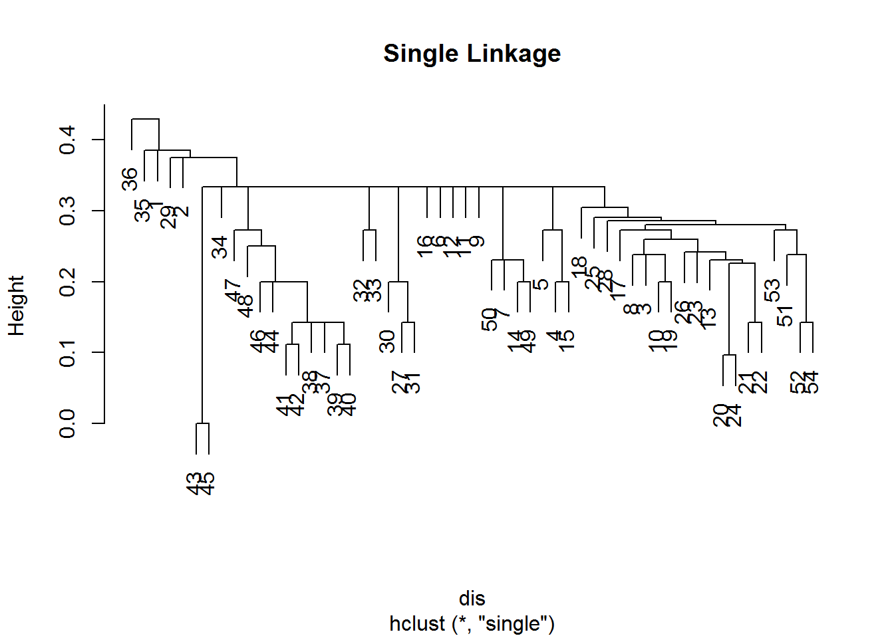 Single linkage can be well portrayed on an ordination and is capable of finding discontinuities in the data. However, it is prone to joining single sites to large clusters.
clus_com<-hclust(dis,"complete")
plot(clus_com,main="Complete Linkage")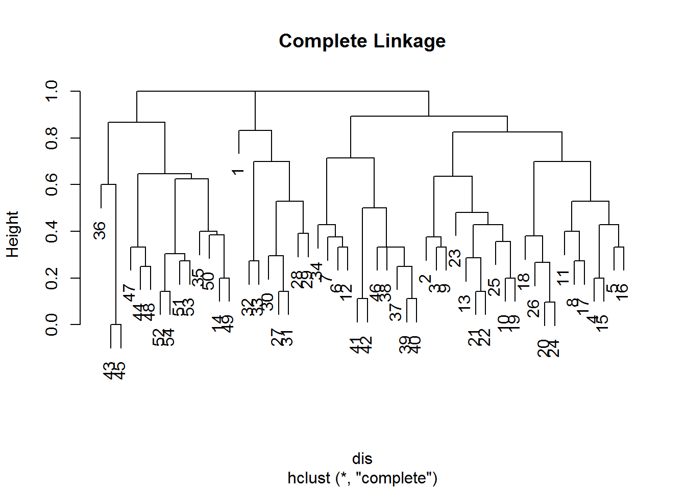 Complete linkage creates compact clusters.
clus_ave<-hclust(dis,"average")
plot(clus_ave,main="Average Linkage")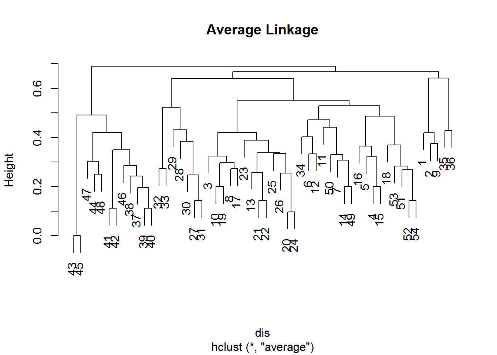
Average linkage is a compromise between the previous two and more neutral in the groupings.
All these methods are agglomerative and start by combining the two most similar sites then they combine points to points or groups to groups, based on the ‘fusion’ criteria. The vertical axes of the dendrograms shows the level of fusion, or dissimilarity.
Interpreting the classes
We can cut the dendrograms at a specified fusion level in order to get a desired number of clusters.
plot(clus_com)
rect.hclust(clus_com,5) #rect.hclust allows us to visualize the cut we make. This is up to you as the ecologist!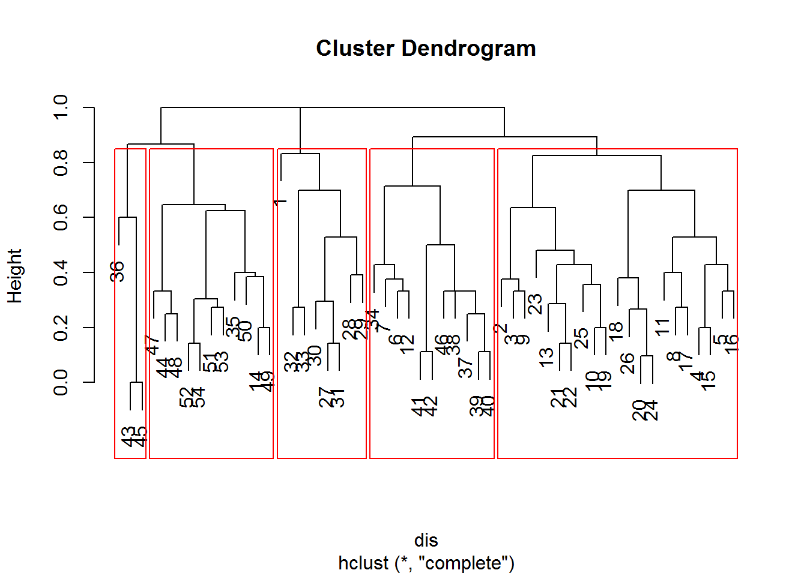
grp<-cutree(clus_com,3) #cutree produces a classification vector with the number of classesDisplaying Clusters onto Ordination
plot(ord2,display="sites",type="t")
ordihull(ord2,grp,lty=2,col="red") #convex hulls
plot(ord2,display="sites",type="t")
ordispider(ord2,grp,lty=2,col="red") #spider plot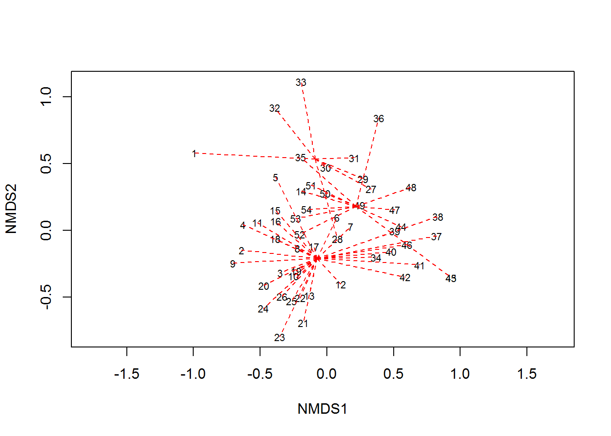
plot(ord2,display="sites",type="t")
ordiellipse(ord2,grp,lty=2,col="red") #ellipse plot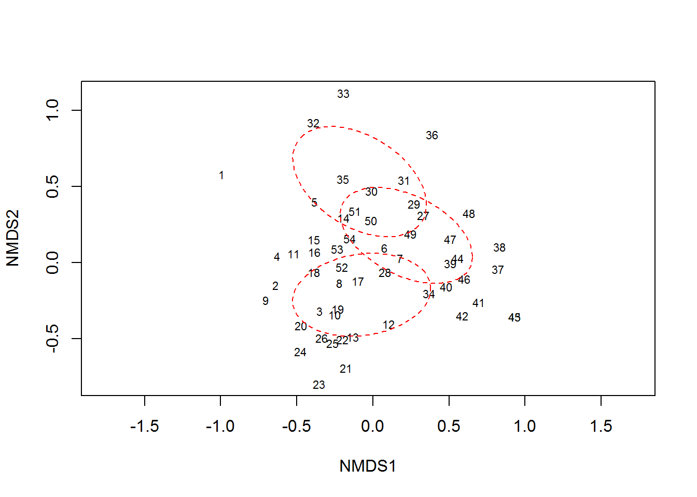
By overlaying a classification onto an ordination you are able to cross-check each method. For example, if the clusters appear distinct (not overlapping) then both analyses may be adequate. However, the classes can overlap and the analyses can still be good. You can improve the analyses by bumping up the number of dimensions in the ordination in order to display the multivariate class structure. Also be aware that ordination and classification may use different dissimilarity indices.
Minimum Spanning Tree
The tree connecting individual points is called a minimum spanning tree. In graph theory, a tree is a connected graph with no loops, the spanning tree is the tree that connects all points and the minimum spanning tree is where the total length of connecting segments is the shortest. We can use the function spantree to find this tree.
mst<-spantree(dis,toolong=1)
plot(mst,ord3,pch=12,col="red")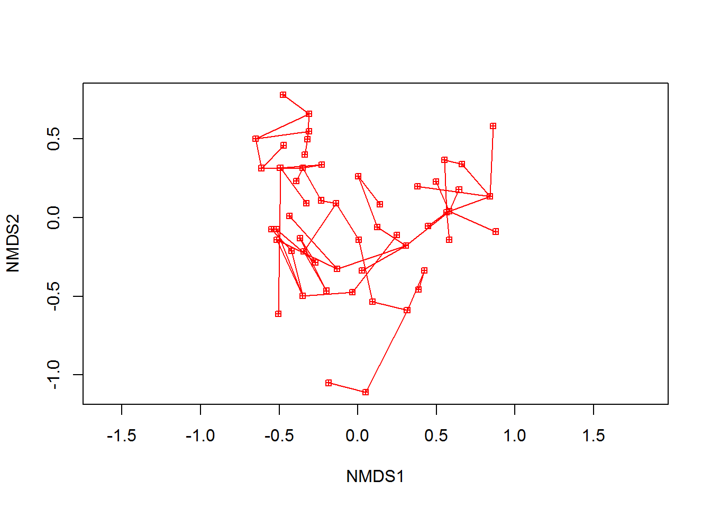
The function spantree uses the dissimilarity index we used above in building the tree. An MST can potentially be used to cross-check an ordination; if the tree is linear the ordination might be good, if the tree is curved there may be arc artefacts and a messy tree could indicate a bad ordination or a need for more dimensions.
3 Dimensional!!!
Up to this point we have been working in 2 dimensions. However, there are several packages that are useful for visualizing our ordinations in 3 dimensions.
library(scatterplot3d)## Warning: package 'scatterplot3d' was built under R version 3.3.2library(rgl)## Warning: package 'rgl' was built under R version 3.3.2Drop a dendrogram onto an ordination
orditree3d(ord3,clus_com,display="sites",type="t") 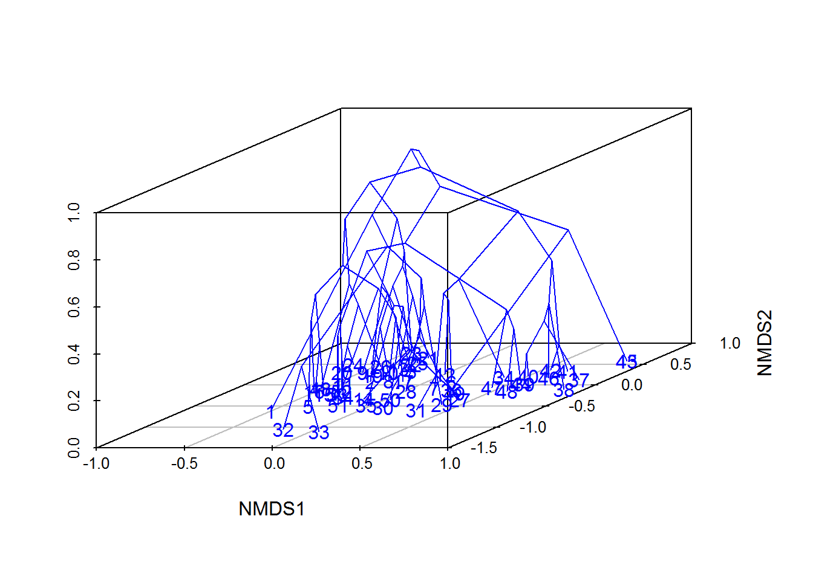
Use an RGL device to visualize a dynamic ordination and classification
ordirgltree(ord3,clus_com,col="red",type="t",display = "site")Three-Dimensional Ordination with disturbance variable fitted
ef<-envfit(ord3~lizzy$Dist,choices=1:3)
plot<-ordiplot3d(ord3,type="n",angle=45,choices=1:3,display="site",col="red",ax.col="black",envfit=ef)
points(plot,"points",pch=5,col="red",cex=0.5) 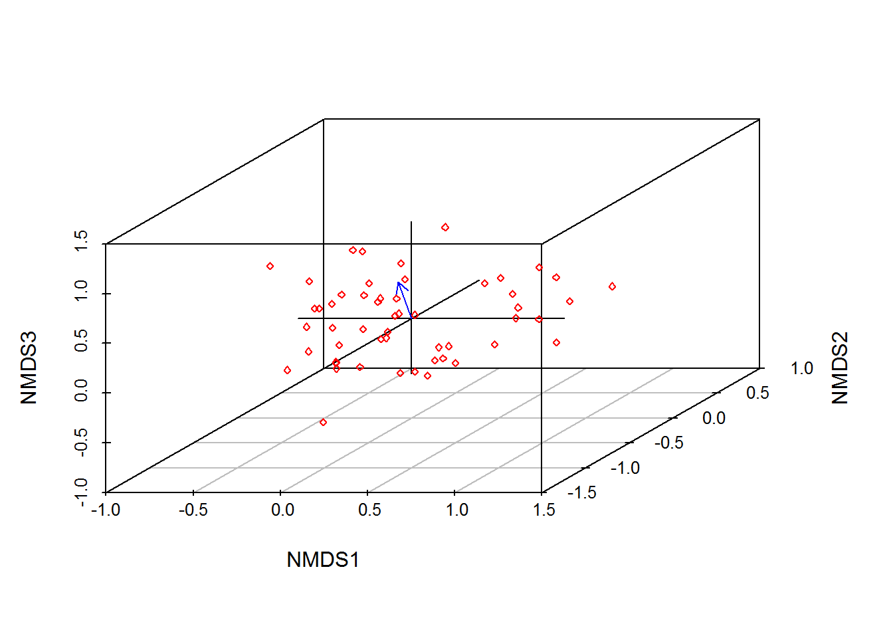